<div class="textcontainer">
<p class="margin"></p>
<h3>Final Project: AUTOMATED JEWELRY BOX</h3>
<h4>Demo Video: https://youtu.be/o23qTtRtsDo?si=fgZnQHBHqr-UGAA4 </h4>
<iframe width="560" height="315"
src="https://www.youtube.com/embed/dQw4w9WgXcQ"
allowfullscreen></iframe>
<h4> Inspiration for the Project </h4>
<p>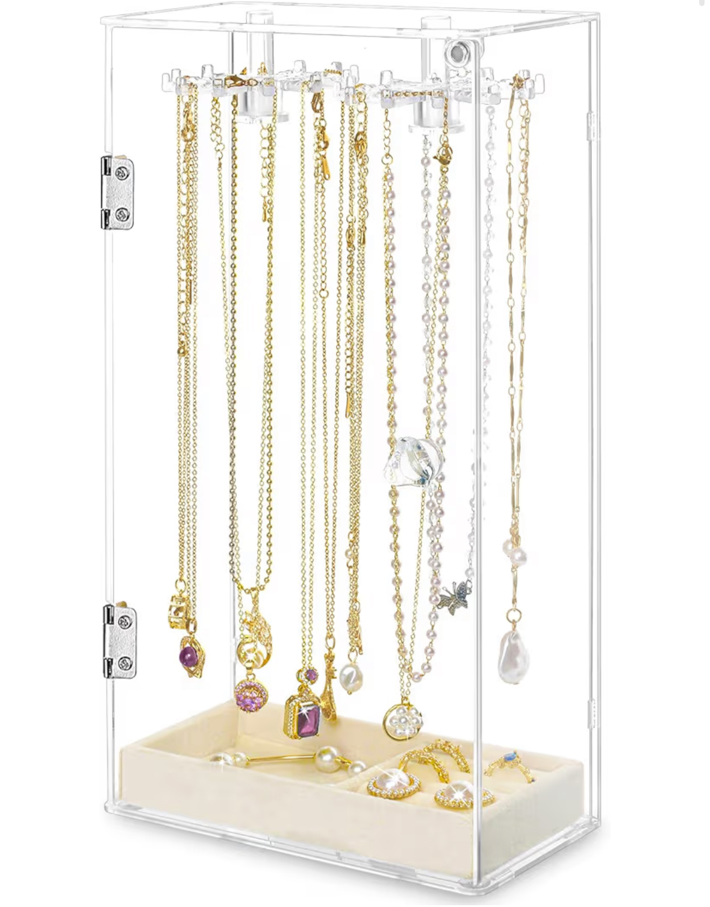</p>
<p> As someone who loves wearing jewelery (and owns a lot of it), I have a couple jewelry organizers in my dorm. This project was inspired by one of these organizers (pictured below). For this jewelry stand, one has to manually rotate the hooks go through the options and choose the desired jewlery. I wanted to make a way to automate this process. I designed and build a jewelry organizer, that has automatically rotating hooks so that someone can browse through their options. A user interface is also incorporated where the person can user can also select the specific hook to retrieve their desired jewelry. </p>
<h4>Timeline of pictures from my first prototype to the final box: </h4>
<p>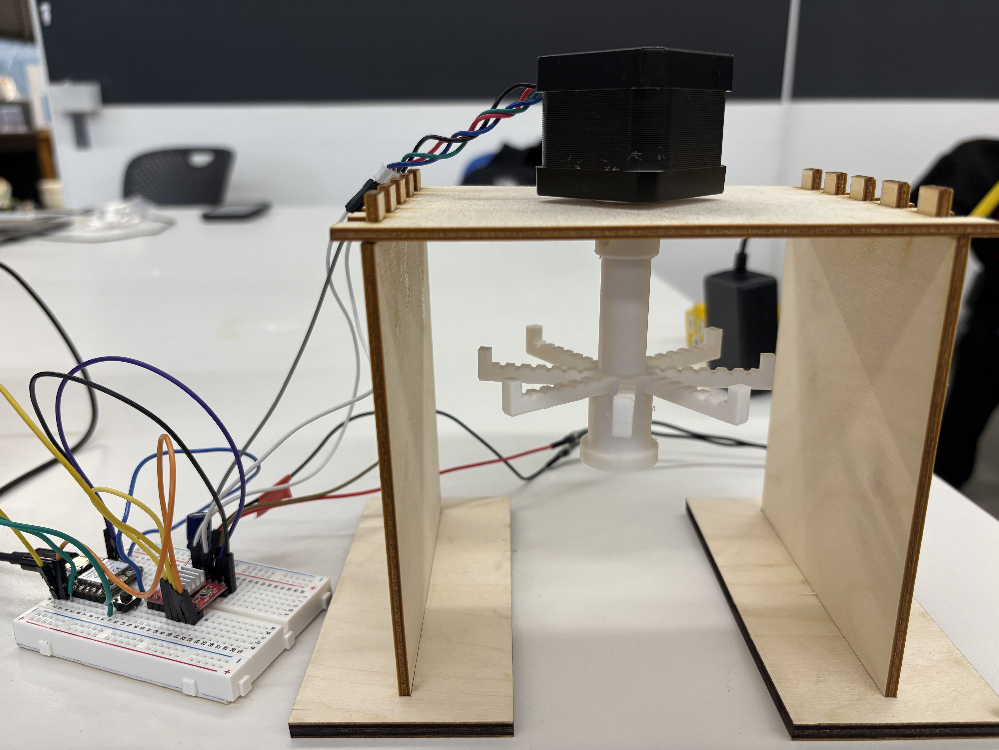</p>
<p>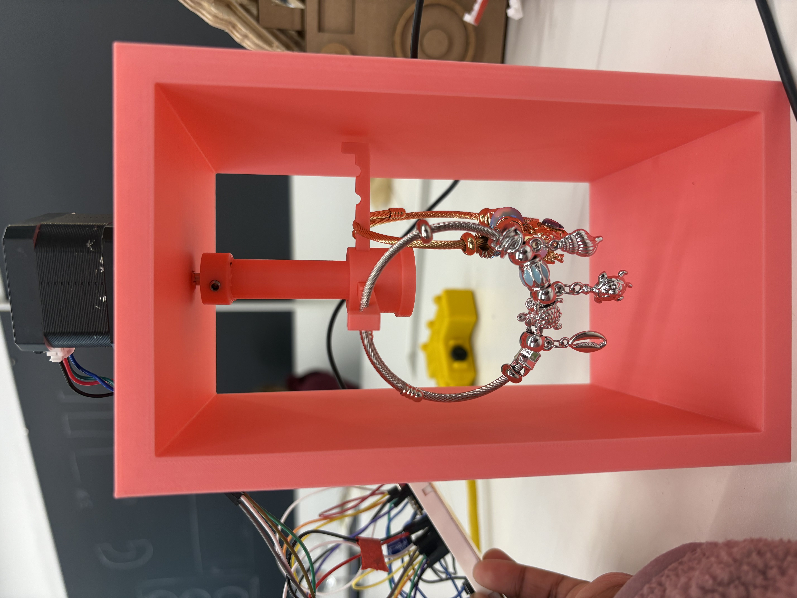</p>
<p>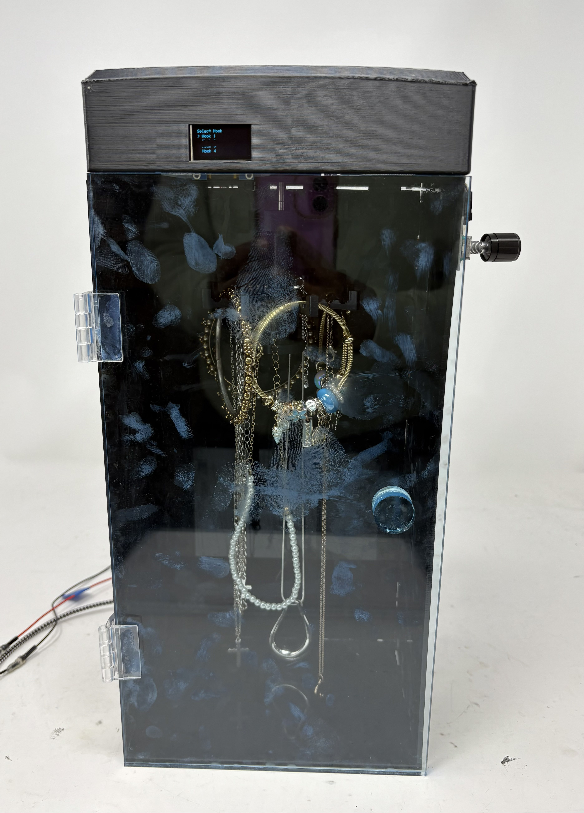</p>
<h4>List of Materials and Tools Used:</h4>
<ul>
<li>Black acrylic panes</li>
<li>Clear acrylic panes</li>
<li>Hinges</li>
<li>Super Glue</li>
<li>Tape</li>
</ul>
<h4>Electronics Used:</h4>
<ul>
<li>Pin-Pin Wires</li>
<li>Pin-Socket Wires</li>
<li>Rotary Encoder</li>
<li>OLED Screen</li>
<li>Stepper Motor</li>
<li>A4988 Stepper Motor Driver</li>
<li>XIAO ESP32 Microcontroller</li>
<li>12V Power Supply</li>
</ul>
<h4>Fabrication Process</h4>
<p> The jewlery organizer has three main components: the rotating hooks, the user interface and the outer frame.</p>
<h4>Rotating Hooks</h4>
<img src="./hook prototypes.jpg" alt="Picture of final jewelry holder" style="width:300px">
<p> For the design of the hook, I used a similar design to the hooks in the original jewelery organizer. There was a main body with a hole in the top center for the stepper motor and another hole at the top for a magnet. There is also a small hole at the side to insert a set screw to hold the piece in place when attached to the motor.
<div style="display:flex; gap:30px;">
<div style="text-align:center;">
<p>Main Body</p>
<p>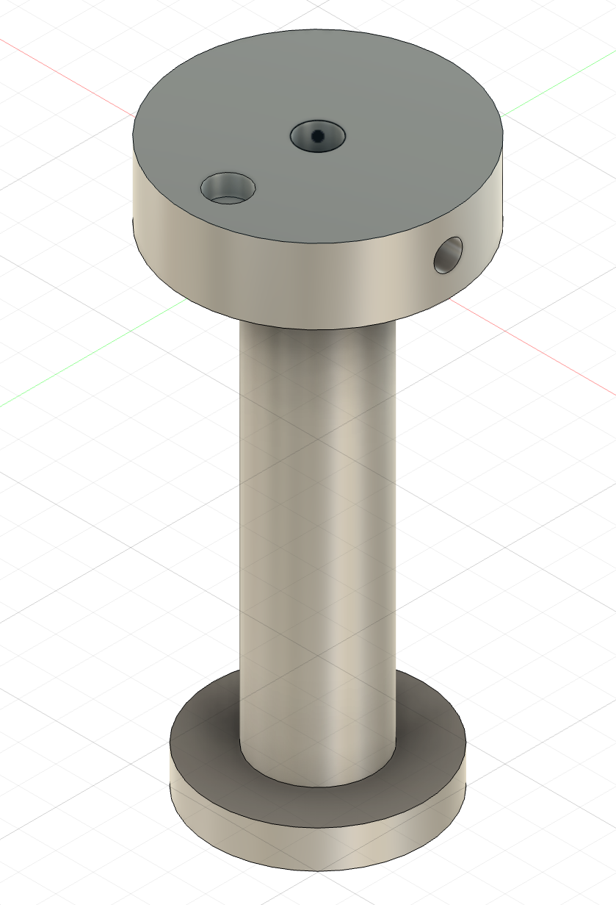</p>
</div>
<div style="text-align:center;">
<p>Hooks</p>
<p>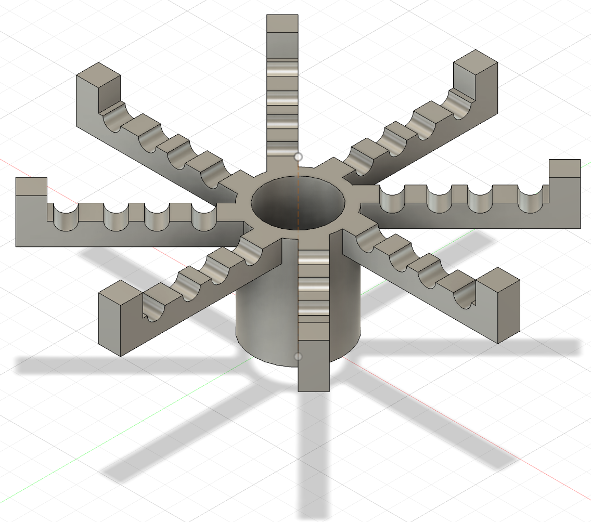</p>
</div>
<div style="text-align:center;">
<p>Both Parts Together</p>
<p>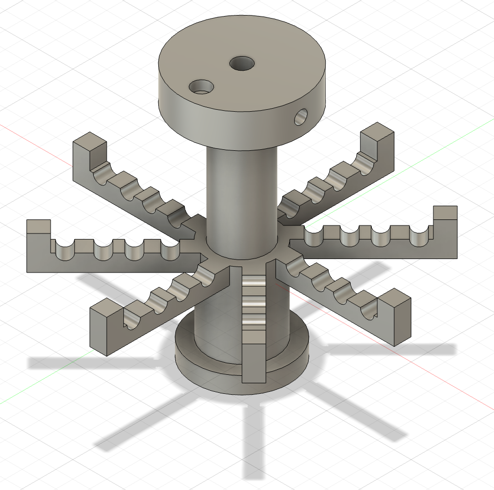</p>
</div>
</div>
<p> Each individual hook has 4 grooves to hold the necklaces or pieces of jewelry. In different iterations of this piece, I used either 4 or 8 hooks. I also played around with detachable arms or having the arms being apart of the main body. In the end, I went with 8 hooks with the hook arms being a part of the main body as this was better for stability and the aesthetic I was going for. </p>
<h4>User Interface</h4>
<div class="flexrow">
<video width="640" height="480" controls>
<source src="userinterface.mp4" type="video/mp4">
</video>
</div>
<p> To get the structure to rotate to a specific hook, I went through different iterations of positioning. I first used an interface with 4 buttons as described in <a href="https://zariaferguson.github.io/PS70ZFerguson/07_outputs/index.html"> Week 7</a>. I then incorporated a rotary encoder and OLED screen that allows the user to scroll through the menu of options and choose their desired hook (<a href="https://zariaferguson.github.io/PS70ZFerguson/10_machine/index.html">Week 10</a>). This final version incorporates the stepper motor with the rotary encoder and OLED. Currently, each hook is labelled "Hook 1, 2, 3...". I had envisioned this as a placeholder and the upgraded version would either have more specific labels on the menu, a user interface that has the picture of the jewelry on each hook or an LED light embedded inside the hooks that lights up when a hook is selected to differentiate between the different hooks. Currently, each hook is labeled “Hook 1, 2, 3…”, which I initially intended as a placeholder. In a more developed version, the interface would either include more descriptive labels, a visual user interface showing the jewelry assigned to each hook, or even embedded LEDs within each hook that illuminate when selected. These upgrades would help users to easily distinguish between different hooks. </p>
<p><u>Hook Positioning Logic</u></p>
<p> To spin to the correct hook, the system continuously tracks the motor’s current position (<code>currentPos</code>) and maps each hook to a fixed position using <code>stepDist</code> (the number of motor steps between hooks). When the user scrolls with the rotary encoder, <code>hookIndex</code> updates on the OLED display, and when the button is pressed, that value is saved as <code>selectedHook</code>. </p>
<p> The target position is then calculated as <code>targetPos = selectedHook * stepDist</code>, converting the hook number into a physical motor position. The code compares <code>targetPos</code> with <code>currentPos</code> to determine both the distance and direction to move to, and in <code>startMotorMove()</code> it computes <code>stepsRemaining = abs(targetPos - currentPos)</code> while setting the direction pin so the motor always rotates toward the target using the shortest way. </p>
<p> <code>moveMotor()</code> handles the movement, where <code>stepInterval</code> generates step pulses. Each pulse moves the motor one step closer while decreasing <code>stepsRemaining</code>. Once it reaches zero, the motor stops and <code>currentPos</code> is updated to match the new location. This ensures accurate tracking for the next move. Before selection, <code>runMotor()</code> keeps the system continuously rotating in a carousel mode until a hook is chosen. </p>
<p> Here is the final code incorporating all these elements: </p>
<div class="flexrow">
<a id="btn" href="motor_rotaryencoder_OLED.zip" download>Final Project Code
</a>
</div>
<p> Final Workflow:
code runs --> systems rotates in carousel mode --> user scrolls through menu --> user chooses desired hook --> system takes the shortest path to rotate to the hook --> system stops once arrive at the hook --> user presses the button again afterwards to resume carousel-like rotation </p>
<h4>Outer Frame</h4>
<p> The outer frame of this box was made by using black acrylic panes for the walls, the top face and the bottom face with a clear acrylic pane for the door. These pieces were designed as finger joint pieces from https://makercase.com/ and then laser cut. For the top face, I also cut through holes that match the dimensions of the stepper motor so that the motor can sit flush on the structure.
<p>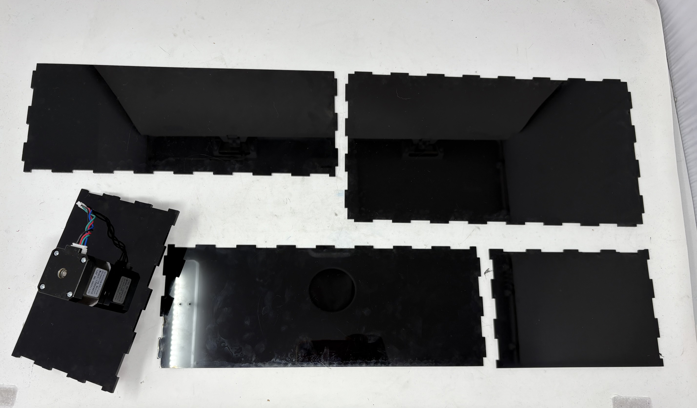</p>
<p>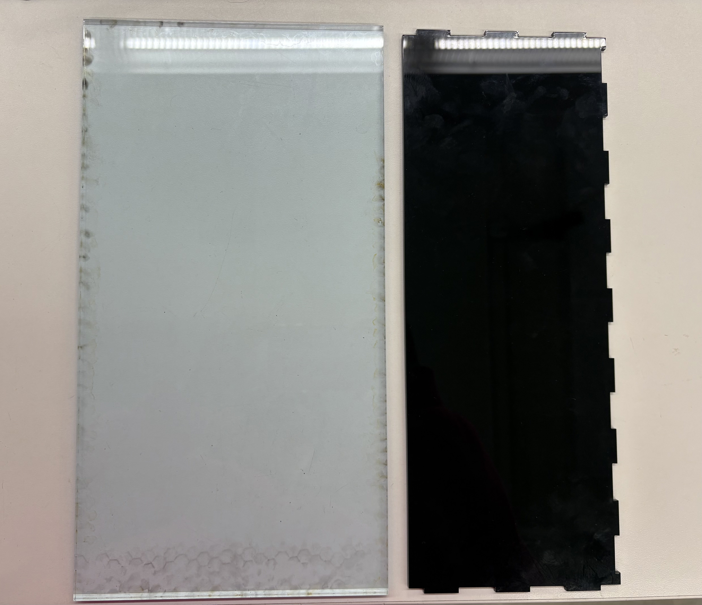</p>
<p> Small circular pieces were laser cut from the clear acrylic pane to make the door knob. Two hinges were attached to the side of the box to faciliate the opening and closing or the jewelry box. Super glue was used to attach all the pieces together. </p>
<p> The upper frame of this box was 3D printed leaving openings for the OLED screen and wire connections. </p>
<p>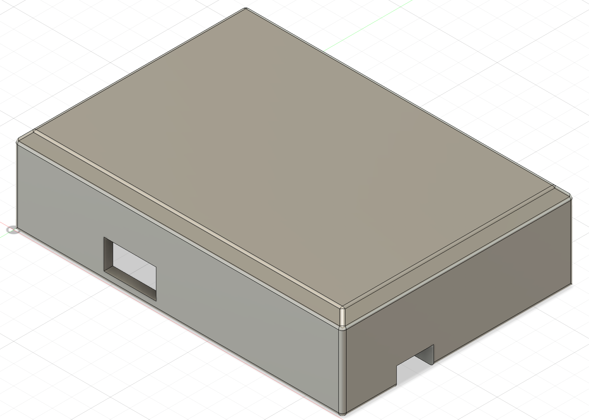</p>
<h4>Electronics</h4>
<p> Here is the circuit incorporating the rotary encoder, OLED screen and stepper motor. </p>
<p>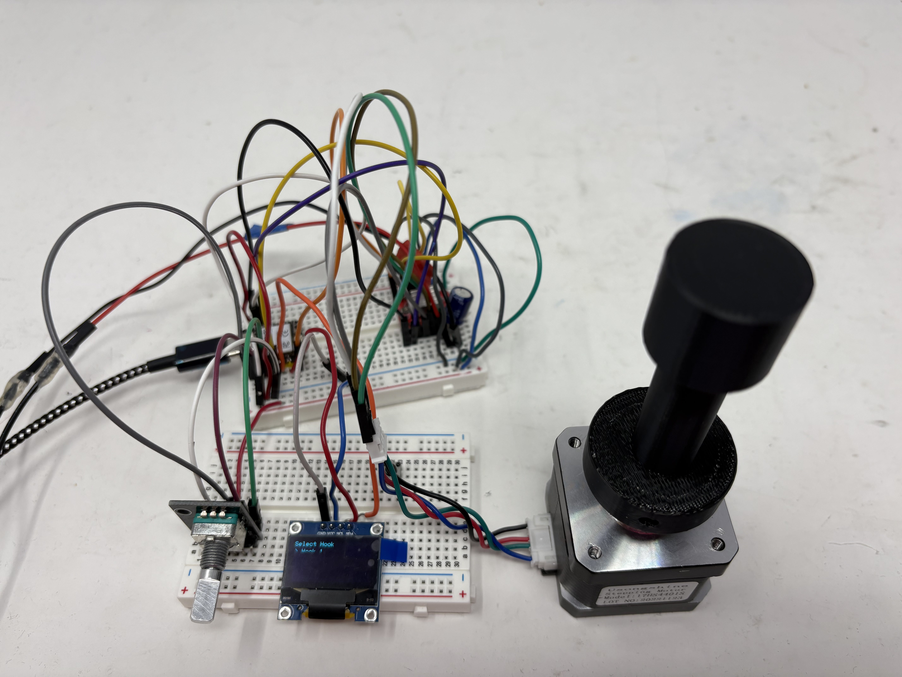</p>
<p> Here is the final circuit after being soldered with the wires being extended to connect to the electronic components of the box. </p>
<p>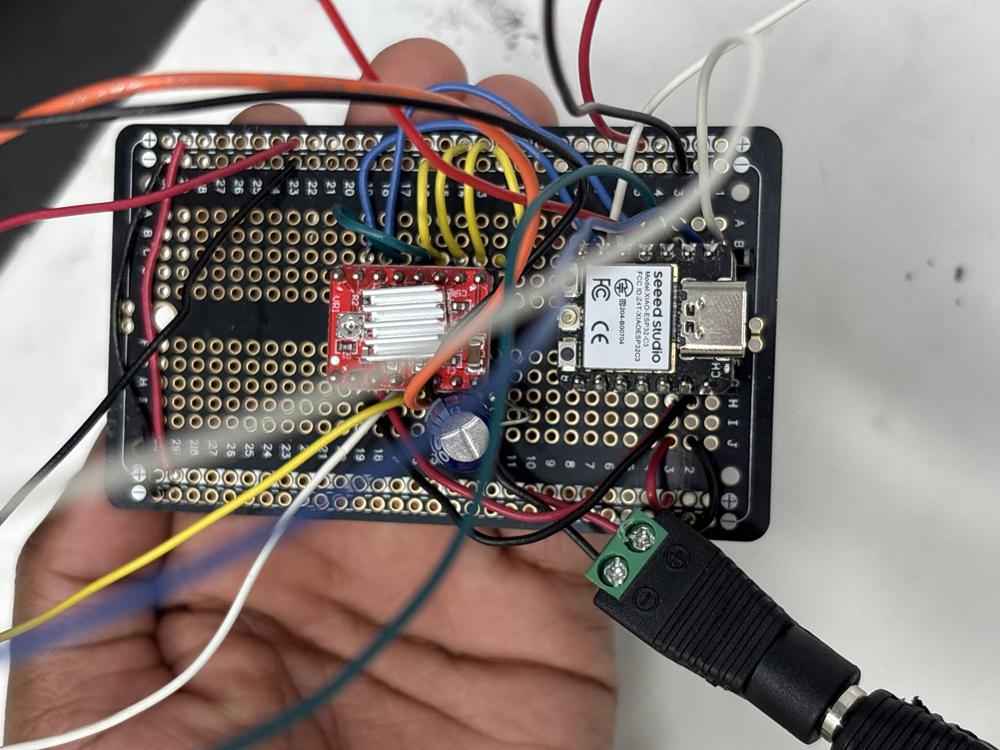</p>
<strong><h4>FINAL PRODUCT</h4></strong>
<p> https://youtu.be/o23qTtRtsDo?si=fgZnQHBHqr-UGAA4 </p>
<iframe width="560" height="315"
src="https://www.youtube.com/embed/dQw4w9WgXcQ"
allowfullscreen></iframe>
<p> The final product is an automated jewelry organizer. It features 8 hooks attached to a main body, each with 4 grooves, that is hung from a stepper motor. A rotary encoder attached to the side is also featured for the user to scroll through the menu and choose their desired jewelry. The casing on top houses some of the electronics and displays an OLED screen that has 8 options for the user to choose from on a scrollable menu. </p>
<p> For future iterations, I would envision making a cleaner housing for the electronics that sits to the side of the box and includes a mirror. I would also add LED lights to better illumniate the jewelry inside the box and differentiates once a specific hook is chosen. </p>
<p>All CAD files used for fabrication can be found here!</p>
<p class="margin"> </p>
<div class="flexrow">
<a id="btn" href="finalproject.zip" download>Final Project Files Here
</a>
</div>
<p class="margin"> </p>
<p> Acknowledgements: I would like to thank the entire teaching staff for their guidance in completing this project and a special shoutout to Bobby and Kassia who were such a huge help throughout the entire process! </p>
<p>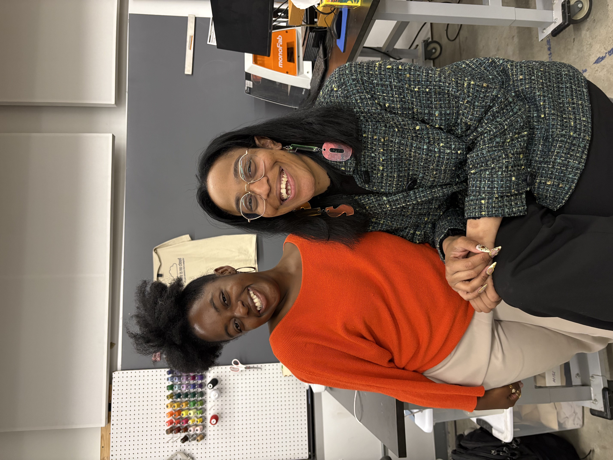</p>
<p>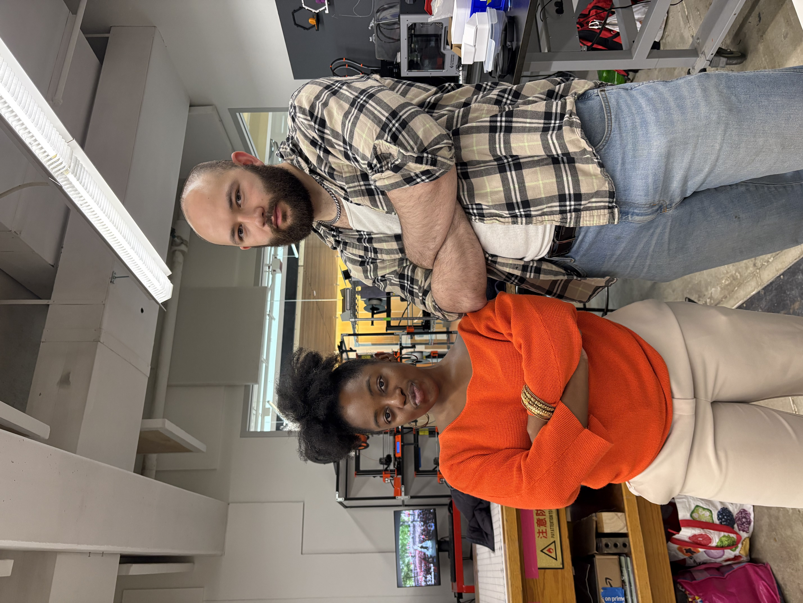</p>
</div>